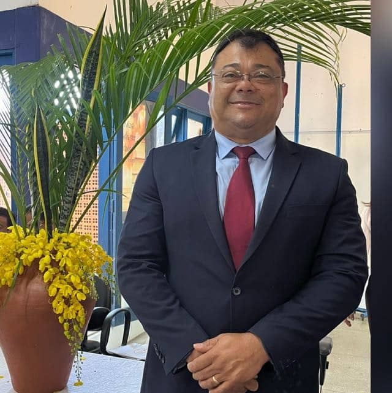
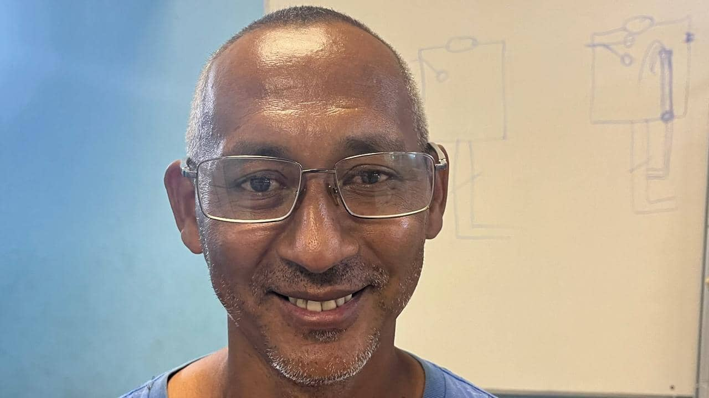
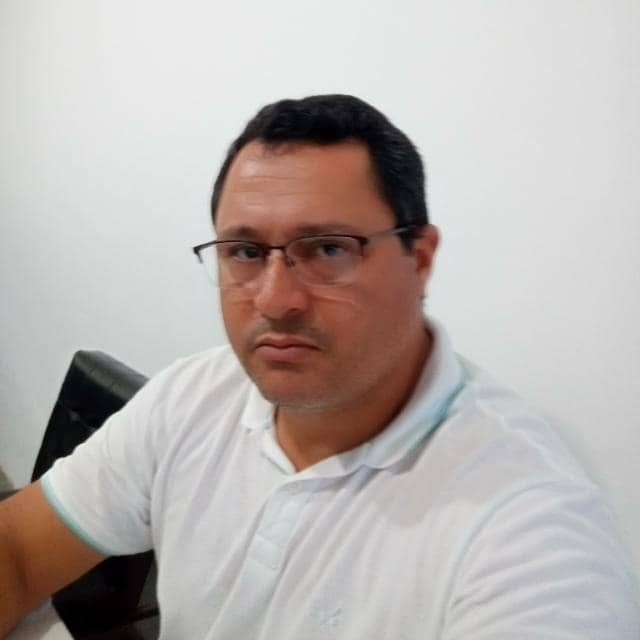

Destinado a destacar todos que colaboraram de alguma maneira no processo de concepção e produção do nosso projeto.

Gregório Monteiro
Coord. Pedagógico

Fernando Costa
Prof° do Curso de Eletricista
Francisco Alves
Bacharelado em Sistemas de Informação

Saul Moraes
Prof° do Curso de Técnico em Administração